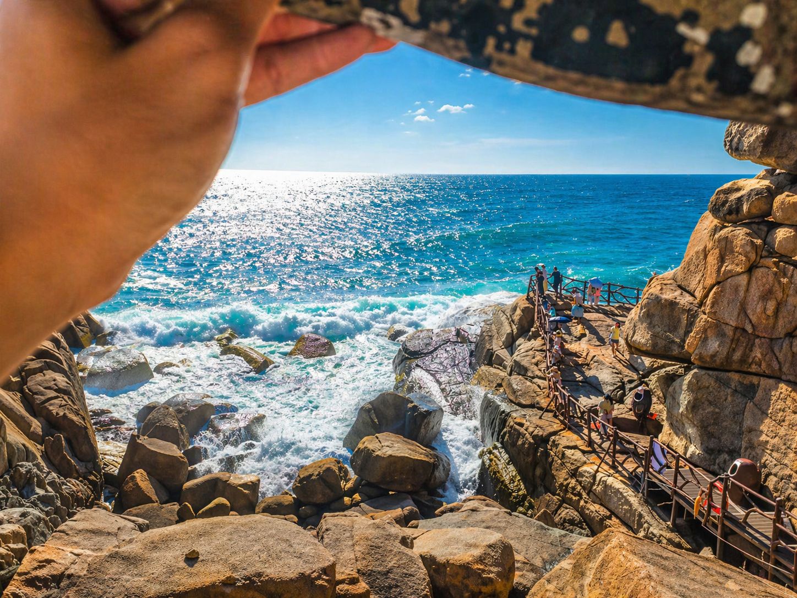
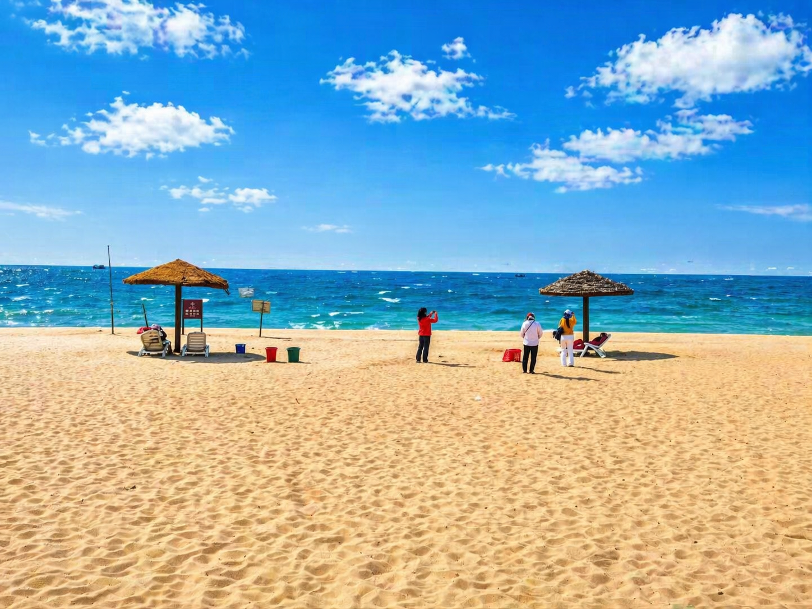
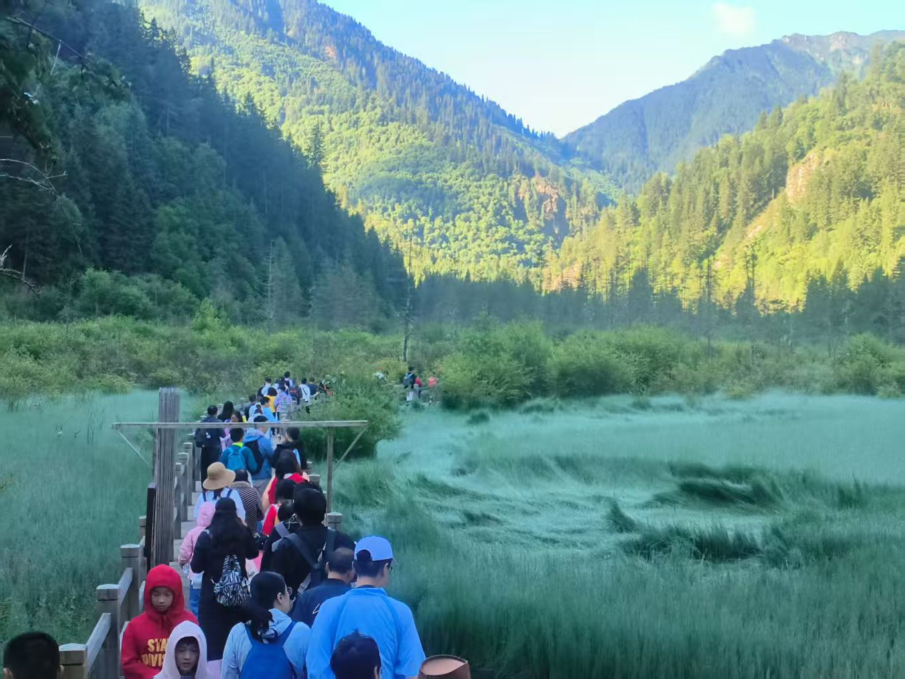
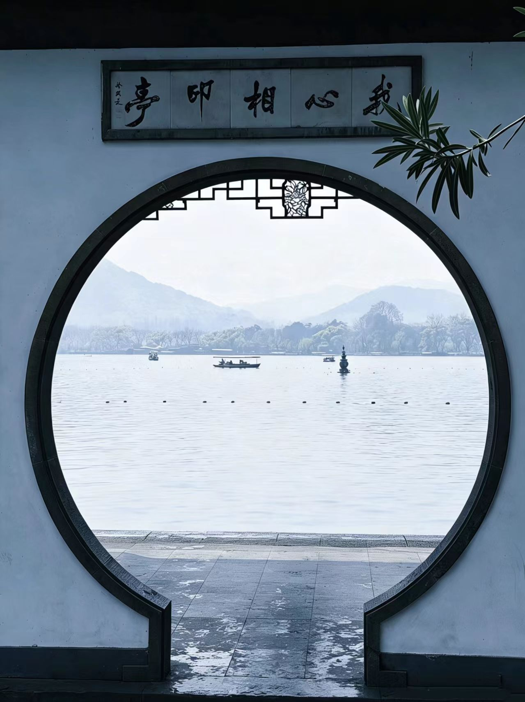
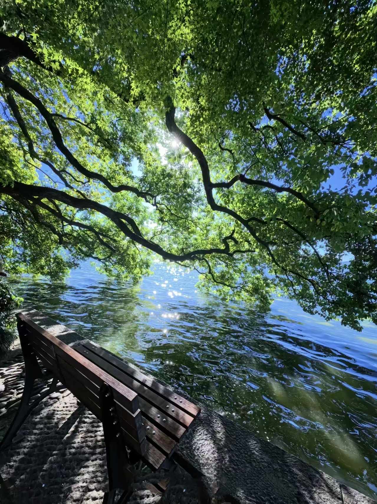
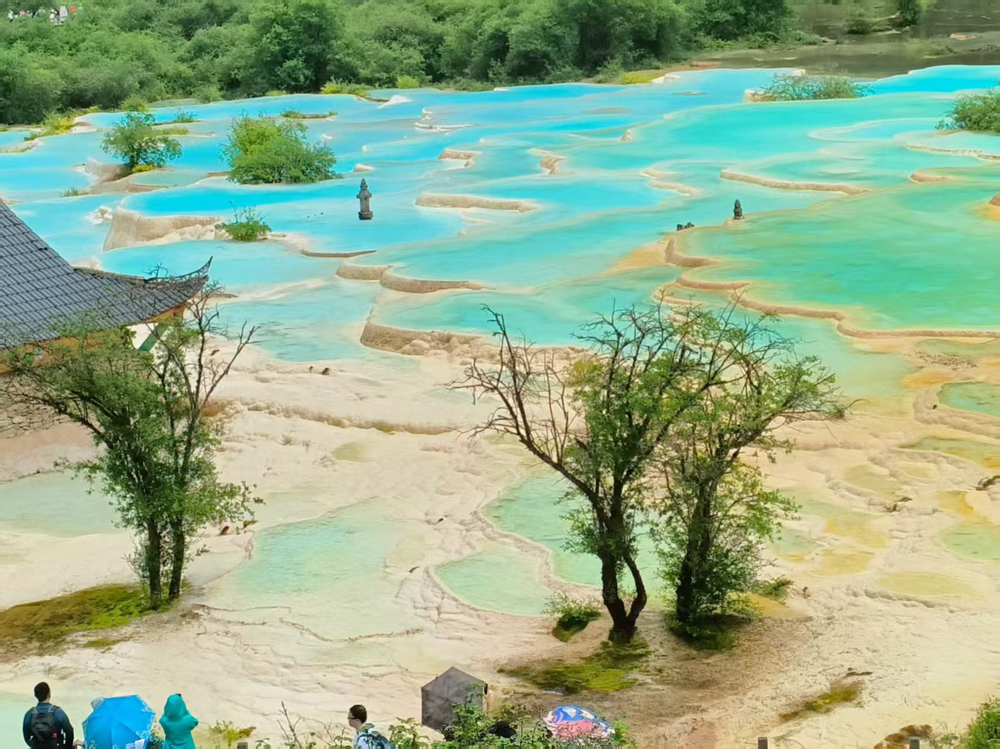
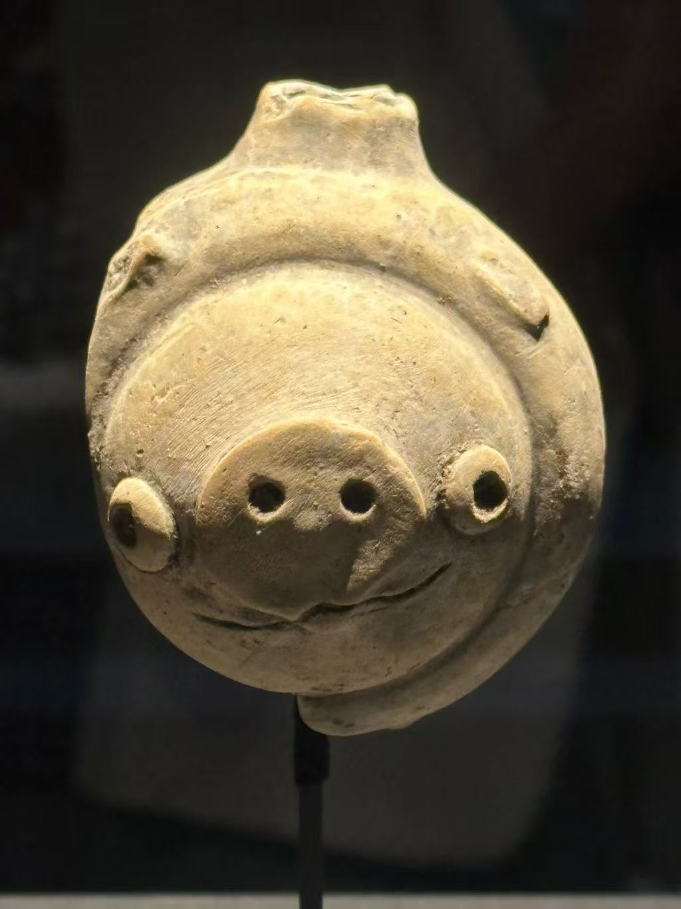
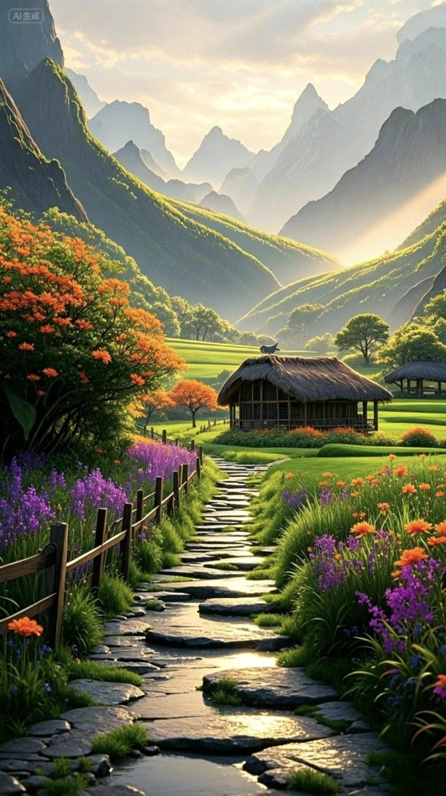
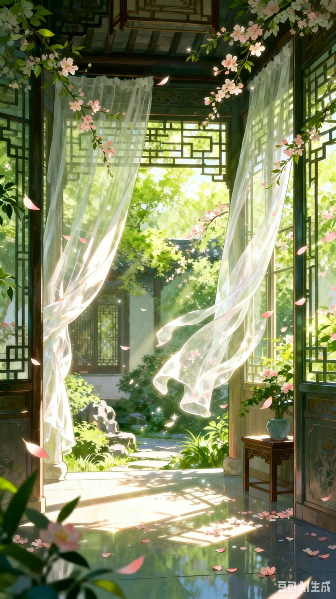
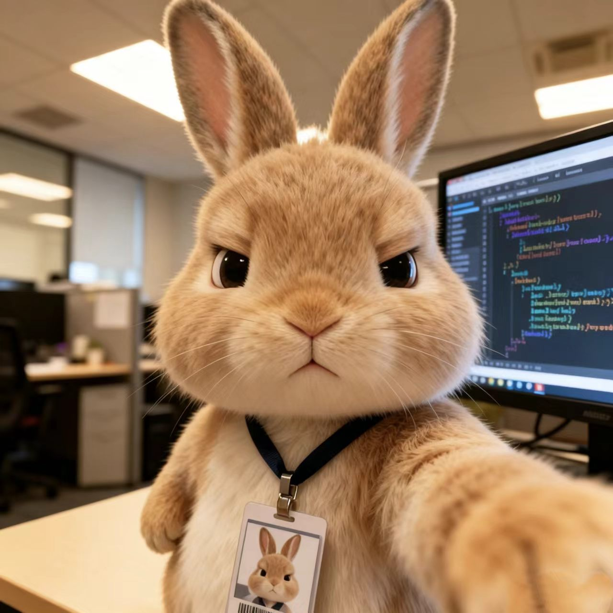

旅行相册
这里收藏了我旅途中拍下的风景与片刻，也放了一些 AI 生成的画面灵感。
按分类浏览，点击任意照片可放大查看。
按地点浏览：
🤖 AI 生成
🌊 三亚
🏔️ 九寨沟
🌸 杭州西湖
🐼 成都
三亚旅行4 张照片
蓝色海岸线、棕榈树与礁石奇景，是属于三亚的热烈与松弛感。

三亚
三亚
三亚

三亚九寨沟4 张照片
五彩池、珍珠滩瀑布，用镜头留住那些不真实的蓝绿色。
九寨沟
九寨沟
九寨沟

九寨沟杭州西湖4 张照片
断桥残雪、曲院风荷，西湖四季各有各的温柔。
西湖
西湖

西湖
西湖成都记忆4 张照片
从自然奇景到千年遗址，成都藏着太多让人意想不到的惊喜。

成都
成都
成都

成都AI 生成照片4 张
用提示词召唤出的画面灵感，每一张都附有生成时使用的完整提示词。
🤖 AI Generated
夕阳侠客·芦苇荡中
✦ Prompt 提示词
黄昏，红日高挂，芦苇荡，地平线上有一位长发侠客剪影，头戴斗笠，手拿长剑指向镜头，色彩鲜艳明亮，高饱和度，插画艺术，数字CG艺术，oc渲染器，发光特效，真实光线追踪，真实光线反射，真实光线衰减，正面视角
展开全部 ↓

🤖 AI Generated花径小屋·山间田园
✦ Prompt 提示词
童话风山间田园风光，带积水反光的石板路小径，路两旁开满橙紫色野花，左侧有橙色花树和木栅栏，中景是木质茅草屋，背景是连绵的青山和层叠山峰，清晨/黄昏的柔和侧逆光，阳光透过山谷洒下暖金色丁达尔光，明亮温暖的治愈氛围，清新马卡龙色调，竖版9:16构图，宫崎骏动画质感，4K高清，细节丰富
展开全部 ↓

🤖 AI Generated古风庭院·花瓣飘落
✦ Prompt 提示词
国风动漫，柔软流畅，超高细节，采用细腻写实的古风手绘风格绘制，画面中呈现出一处古风内宅场景，四周绿意盎然，处处弥漫着春意盎然的气息。庭院中落花随风飘落，阳光透过窗户轻柔地洒入室内，白色的纱幔在春风的吹拂下微微飘动。整体画面运用意识流的表现手法，通过巧妙的笔触勾勒出丰富的细节，光影氛围感十足，色彩饱满丰富且细腻，融入发光美学元素，营造出一种极其唯美的意境，以高清细节和高分辨率展现出画面的精致。比例 9:16
展开全部 ↓

🤖 AI Generated上班摸鱼的兔子程序员
✦ Prompt 提示词
一只拟人化的小兔，以日常快照的视觉风格展现，照片中没有明确的主体或构图感，还带有轻微的运动模糊。主角占据画面中心位置，是自拍的大头照，脸上带着厌世的神情，它脖子上挂着一个带有自己大头照的工牌。背景是办公场景，旁边的电脑屏幕上是代码开发的页面，营造出一种平凡又独特的氛围。它又有对新年开工的厌烦与无奈
展开全部 ↓